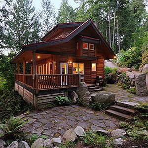
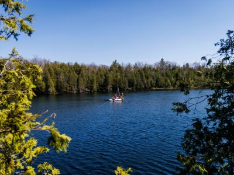
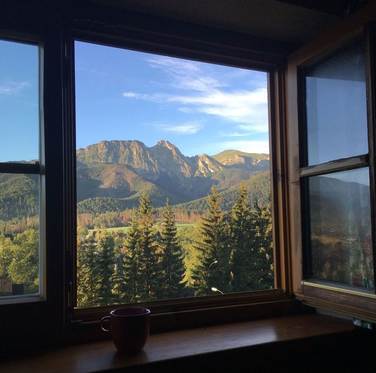

Um Refúgio de Tranquilidade
Muitas pessoas sonham com o agito das grandes metrópoles, mas o meu maior objetivo é exatamente o oposto: viver uma vida pacata em um lugar tranquilo, cercado pela natureza.
Meu sonho é me mudar para um país com alta qualidade de vida e segurança, como o Canadá, a Nova Zelândia ou alguma pequena vila na Europa. Quero ter uma casa aconchegante, onde eu possa acordar cedo, tomar um café observando o movimento natural do ambiente ao meu redor e ter tempo de sobra para me dedicar aos meus hobbies e projetos pessoais sem a pressa do dia a dia.
Galeria de Inspiração
Algumas imagens que representam o tipo de lugar onde eu gostaria de viver:


